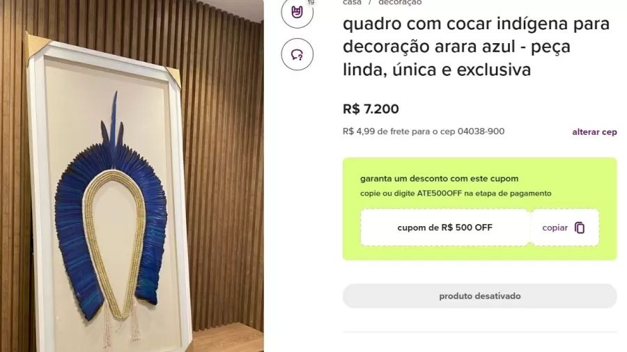
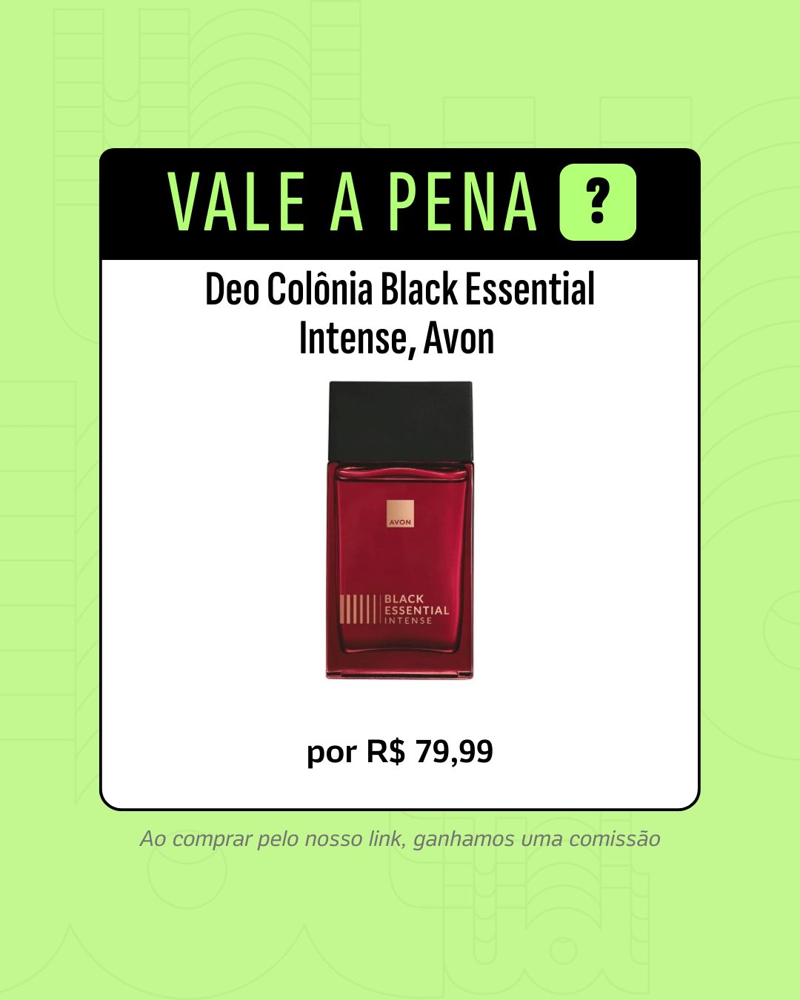

A thriving underground market Um mercado subterrâneo próspero
Indigenous objects produced with feathers from wild animals—whose purchase, sale and even possession are prohibited in Brazil—are freely traded on the internet. Finding these listings is not a challenge: simply search for "indigenous headdress" and "macaw feather" to reach social networks like Facebook and Instagram and e-commerce sites like Mercado Livre and Enjoei.
Objetos indígenas, produzidos com penas de animais silvestres, cuja compra, venda e até guarda são proibidas no Brasil, são vendidos livremente na internet. Encontrar estes anúncios não é um desafio: basta buscar "cocar indígena" e "pena de arara" para chegar a redes sociais como Facebook e Instagram e sites de e-commerce como Mercado Livre e Enjoei.
The items advertised reveal astronomical markups. A Fulniô headdress made with heron feathers: R$ 5,300. A frame with an indigenous headdress: R$ 7,200. A headdress with blue macaw feathers: R$ 7,800.
Os itens anunciados revelam margens de lucro astronômicas. Cocar com pena de garça feito pela etnia fulniô, R$ 5.300. Quadro com cocar indígena, R$ 7.200. Cocar com pena de arara azul, R$ 7.800.
The products are also sold on auction sites. UOL identified that at least 21 of them sell or have sold indigenous headdresses with natural feathers. At Litoral Paulista Leilões, more than one hundred headdresses were auctioned with values ranging from R$ 850 to R$ 7,800 each.
Os produtos proibidos também estão em sites de leilão. O UOL identificou que pelo menos 21 deles vendem ou já venderam cocares indígenas com penas naturais. No Litoral Paulista Leilões, mais de cem cocares foram leiloados com valores entre R$ 850 e R$ 7.800 cada um.

Photo credit: BBC News Brasil
Crédito da foto: BBC News Brasil
Profits that fuel trafficking Lucros que alimentam o tráfico
According to Dener Giovanini, coordinator of Renctas (Brazilian Network for Combat of Illegal Wildlife Trafficking), the profit disparity between local producers and international resellers is staggering. "You have Brazilian headdresses being commercialized for 80,000 euros, bought here in Brazil for R$ 200, R$ 300" he explains.
De acordo com Dener Giovanini, coordenador-geral da Renctas (Rede Nacional de Combate ao Tráfico de Animais Silvestres), a disparidade de lucro entre produtores locais e revendedores internacionais é assustadora. "Você tem cocares de etnias brasileiras comercializados por 80 mil euros, comprados aqui no Brasil por R$ 200, R$ 300", explica ele.
"You have headdresses being commercialized for 80,000 euros, bought here in Brazil for R$ 200, R$ 300. Most of the profit stays in the hands of smugglers."
"Você tem cocares de etnias brasileiras comercializados por 80 mil euros, comprados aqui no Brasil por R$ 200, R$ 300. A maior parte do lucro fica na mão de contrabandistas."
This markup is not reaching indigenous artisans. Even when indigenous people participate in the trade, they do not receive the largest portion of profits, which in most cases goes to smugglers.
Essa margem de lucro não chega aos artesãos indígenas. Mesmo quando indígenas praticam o comércio, não são eles a receber a maior fatia do lucro, que na maioria das vezes fica na mão de contrabandistas.
Rare blue macaw headdress found for sale
Raro cocar de arara azul encontrado à venda
Figures based on Renctas data and marketplace listings Números baseados em dados da Renctas e listagens de marketplace
What the law says O que diz a lei
Brazilian law provides for penalties of up to one year in prison and fines for anyone commercializing indigenous products made from wild animal feathers.
A lei brasileira prevê pena de até um ano e multa a quem comercializa produtos indígenas produzidos com penas de animais silvestres.
Two laws address the issue: the 1967 Wildlife Protection Act, which prohibits the commerce of wild fauna specimens and products that imply their hunting, and the 1998 Environmental Crimes Act. However, the enforcement of these laws on social networks is still in its infancy.
Duas leis tratam do tema: a de Proteção à Fauna, de 1967, que proíbe o comércio de espécimes da fauna silvestre e de produtos que impliquem na sua caça, e a de Crimes Ambientais, de 1998. A fiscalização dessas redes, no entanto, ainda engatinha.
Between 2023 and June 2024, only 26 administrative violations were registered—down from 20 in 2023. Almost all citations were against individuals or small artisans, rather than the major platforms facilitating the trade. Only one fine was issued against a company—a hotel in Espírito Santo. Fines ranged from R$ 500 to R$ 85,000.
Um levantamento mostrado pelo Ibama, entre 2023 e junho de 2024, registrou apenas 26 autos de infração — menos que os 20 em 2023. Quase todos foram contra pessoas físicas, contra os próprios indígenas ou pequenos artesãos. Só uma multa foi contra uma empresa — um hotel do Espírito Santo. Os valores das multas variam de R$ 500 a R$ 85 mil.
Only 26 violations recorded between 2023 and June 2024—one per week, in a market with thousands of active listings.
Apenas 26 autos de infração entre 2023 e junho de 2024 — um por semana, em um mercado com milhares de anúncios ativos.
Headdress with macaw feathers at auction
Cocar com penas de arara em leilão
Experts confirm: these are not reproductions Experts confirmam: não são reproduções
One of the largest auction houses, Litoral Paulista, claimed to a BBC News Brasil reporter that the pieces were made with dyed feathers, not from wild animals. However, the company refused to provide documentation of material origin.
Uma das maiores casas de leilão, a Litoral Paulista, afirmou à reportagem que as peças são feitas com penas tingidas e não de animais silvestres, mas se recusou a fornecer documento de origem do material leiloado.
When BBC News Brasil presented images of auction headdresses to Professor Luís Fábio Silveira, a biologist and curator of the bird section and vice-director of USP's Museum of Zoology, his assessment was unambiguous. In one headdress alone, he identified at least three species of macaws.
O UOL mostrou as imagens das peças ao professor e biólogo Luís Fábio Silveira, curador da seção de aves e vice-diretor do Museu de Zoologia da USP. Em um cocar ele identificou ao menos três espécies de araras.
"There is no evidence whatsoever of color or feather shape alteration," said Prof. Silveira, noting that anyone claiming authenticity from a photograph alone would be making a baseless assertion.
"Não há qualquer evidência de alteração da cor ou do formato das penas," apontou o professor, rejeitando a alegação de que seria difícil constatar algo por apenas uma foto.
Failed enforcement: a dossier goes nowhere Fiscalização fracassada: um dossiê não chega a lugar nenhum
In June 2023, Renctas delivered a comprehensive dossier to Brazil's environmental agency (Ibama) documenting over one hundred cases, with seller names and advertisement links. To date, Renctas has received no response.
Um dossiê produzido pela Renctas, denunciando mais de cem casos do tipo, com nomes de vendedores e links de anúncios, foi entregue ao Ibama em junho de 2023. Até hoje não recebeu resposta.
"Until today we have not received any feedback," said Dener Giovanini, Renctas coordinator. Ibama denied the reporter access to the investigation file under Brazil's Access to Information Law, but admitted that no enforcement action was taken.
"Até hoje não recebemos nenhum retorno," disse Dener Giovanini. O Ibama negou acesso ao processo, mas admitiu que nenhuma fiscalização foi feita.
When asked about enforcement across major platforms, responses varied from inadequate to evasive. Mercado Livre said it removed listings after an Ibama notification, claiming it works "tirelessly" to combat platform abuse. Enjoei stated it was never approached by Ibama but prohibits contraband. Meta (Facebook/Instagram) claimed it bans content promoting sales of endangered species.
Questionadas sobre a fiscalização, as plataformas deram respostas inadequadas. Mercado Livre disse que removeu anúncios após notificação. Enjoei afirmou não ter sido procurada. Meta disse que proíbe conteúdo que promova venda de espécies em risco. Nenhum dos links da denúncia da Renctas foi removido.
Yet none of the links in the Renctas complaint were removed—including one from an Instagram page explicitly stating that the headdresses sold there are made with feathers from endangered animals, including macaws, hawks and parrots.
Nenhum dos links da denúncia da Renctas foi removido, nem o de uma página de Instagram que diz que os cocares ali vendidos são feitos com penas de animais silvestres, incluindo araras, gaviões e papagaios.

Headdress listings found on major e-commerce platforms
Anúncios de cocares encontrados em grandes plataformas de e-commerce
How the state helped create the market Como o Estado ajudou a criar o mercado
Enforcement of the law in Brazil faces a peculiar challenge: the government itself stimulated this market. The National Indigenous Foundation (Funai), created in 1967, sold indigenous artifacts in stores across the country until 2004. A 2006 study by the foundation acknowledged that Funai may have been partially responsible for transforming indigenous plumaria into an object of international market speculation.
Fazer a lei "pegar" no Brasil é um desafio, já que o próprio Estado estimulou esse mercado. A Funai, criada em 1967, vendeu artefatos indígenas em lojas em várias cidades do país até 2004. Um estudo feito pela fundação ainda em 2006 admitiu que o órgão pode ter sido parcialmente responsável por fazer a plumaria indígena virar objeto de especulação do mercado internacional.
Part of the auction listings now reference Funai as the source of the pieces. The sale only formally ended when the Federal Police conducted Operation Pindorama in 2021, which seized objects and arrested Funai employees in Brasília. Investigations revealed that a North American was ordering animal parts via fax, including individual feathers, with support from agency staff.
Parte dos anúncios encontrados nos leilões cita a Funai como origem das peças. A venda só acabou formalmente quando a Polícia Federal deflagrou a Operação Pindorama, em 2021, que apreendeu objetos e prendeu funcionários do órgão. As investigações mostraram que um norte-americano encomendava partes de animais via fax, inclusive de forma avulsa, com apoio de servidores do órgão.
The Federal Police concluded that indigenous handicrafts were "merely a facade for wildlife trafficking and animal slaughter."
A Polícia Federal concluiu que o artesanato era "mera fachada para o tráfico e a matança de animais."
The indigenous perspective: caught between law and livelihood A perspectiva indígena: preso entre lei e sustento
BBC News Brasil interviewed three indigenous traders from communities in Alagoas and Bahia who depend on sales for their survival. Their frustration with the law is palpable.
A reportagem conversou com três comerciantes indígenas, de comunidades localizadas em Alagoas e na Bahia, que dizem depender das vendas.
"They [Ibama] should be monitoring non-indigenous people," one trader said, arguing that the commercial ban amounts to disrespect. Another expressed it more sharply: "It's just another way for them to want to erase us. On top of everything they've already taken from us."
"Eles [Ibama] teriam que fiscalizar era os não indígenas," disse um deles. Outro foi mais direto: "É mais uma forma de eles [governo] quererem nos descaracterizar. Já não basta o tanto que tiraram de nós."
Another indigenous trader revealed that the most common customers are architects and interior decorators. The law's framing—which applies equally to indigenous producers and outside smugglers—falls disproportionately on indigenous artisans, many of whom have few alternatives for income.
Outro indígena ouvido afirmou que os clientes mais comuns são arquitetos e pessoas que trabalham com decoração. A lei, que se aplica igualmente a produtores indígenas e contrabandistas externos, pesa desproporcionalmente sobre artesãos indígenas com poucas alternativas de renda.
Indigenous artisan workspace
Espaço de trabalho do artesão indígena
Global marketplace, minimal accountability Mercado global, responsabilidade mínima
The pieces are also sold abroad. BBC News Brasil found listings for "Kayapó headdress" items made with wild animal feathers on Etsy and 1stDibs. One piece cost over R$ 250,000.
As peças são vendidas também no exterior. A reportagem encontrou anúncios de "kayapó headdress" feito com penas de animais silvestres nos sites Etsy e 1stDibs. Uma das peças custava mais de R$ 250 mil.
When contacted, 1stDibs stated it did not believe the pieces violated Brazilian law "due to documentation provided by the seller," but refused to share that documentation, citing client privacy. After contact with BBC News Brasil, the listing was updated to claim the feathers were obtained legally in France—yet still markets the item as a "Kayapó headdress," using the name of a Brazilian ethnic group.
A 1stDibs disse que não acredita que as peças violem as leis brasileiras e se recusou a fornecer cópia da documentação. Após o contato, o anúncio foi atualizado para dizer que as penas foram obtidas na França, mas mantém no título que o cocar é no estilo kayapó, um grupo étnico brasileiro.
Etsy never responded to BBC News Brasil's inquiry. The existence of these international marketplaces demonstrates how Brazil's enforcement challenge extends far beyond its borders.
A Etsy não respondeu ao e-mail. A existência dessas plataformas internacionais demonstra que o desafio brasileiro de fiscalização se estende muito além de suas fronteiras.
Why enforcement is failing Por que a fiscalização está falhando
The evidence is stark: a dossier with over 100 cases delivered to Ibama produced zero enforcement actions. A market with thousands of active listings generates only 26 violations per year. An Instagram page explicitly advertising wild-feather headdresses remains untouched. Major platforms claim policies they do not enforce. International sites operate with near-complete impunity.
As evidências são claras: um dossiê com mais de 100 casos entregue ao Ibama não produziu ações de fiscalização. Um mercado com milhares de anúncios ativos gera apenas 26 violações por ano. Uma página do Instagram explicitamente anunciando cocares com penas selvagens permanece intocada. Plataformas internacionais operam com quase impunidade total.
The reasons are structural. Ibama faces resource constraints. Platforms prioritize commerce over compliance. Prosecutors have other priorities. And the Brazilian state's own history in this market—through Funai's decades of sales—has muddied accountability.
As razões são estruturais. Ibama enfrenta limitações de recursos. As plataformas priorizam comércio sobre conformidade. O Estado brasileiro participou por décadas neste mercado através da Funai.
Crime has intensified with social media, becoming more technological with fewer intermediaries—making it harder to trace and harder to police.
O crime se intensificou com as redes sociais, tornando-se mais tecnológico e com menos intermediários, dificultando o rastreamento e a fiscalização.
What needs to change O que precisa mudar
Until enforcement mechanisms are strengthened—through increased Ibama resources, platform accountability measures, and international cooperation—the digital marketplace for illegal indigenous artifacts will continue to thrive. The law exists. The violations are visible. What is missing is the political will to enforce it.
Até que os mecanismos de fiscalização sejam fortalecidos — através de mais recursos para o Ibama, responsabilidade das plataformas e cooperação internacional — o mercado digital para artefatos indígenas ilegais continuará a prosperar. A lei existe. As violações são visíveis. O que falta é vontade política para aplicá-la.
For indigenous communities selling for survival, and for endangered species being decimated for decoration, this continued failure of enforcement represents an ongoing violation of Brazilian law and ecological stewardship.
Para as comunidades indígenas que vendem para sobreviver, e para as espécies ameaçadas sendo dizimadas para decoração, esse fracasso contínuo de fiscalização representa uma violação contínua da lei brasileira e da responsabilidade ecológica.
The underground trade continues despite laws on the books
O comércio clandestino continua apesar das leis existentes